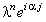
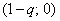

|
4.1. Исследование устойчивости.
Исследуем устойчивость разностной схемы (5.3) с помощью
спектрального метода. Для этого отбрасываем член  , наличие которого, как известно, не оказывает
влияния на устойчивость разностной схемы, и представляем решение в виде гармоники (3.7): , наличие которого, как известно, не оказывает
влияния на устойчивость разностной схемы, и представляем решение в виде гармоники (3.7):
Упрощаем данное выражение, деля левую и правую его части
на ,
и выражаем  :
Комплексный вид полученного выражения свидетельствует о том, что для устойчивости разностной схемы
(5.3) согласно условию (5.6) требуется,
чтобы собственные числа оператора перехода были расположены внутри или на границе круга радиусом 1,
центр которого находится в начале координат комплексной плоскости. :
Комплексный вид полученного выражения свидетельствует о том, что для устойчивости разностной схемы
(5.3) согласно условию (5.6) требуется,
чтобы собственные числа оператора перехода были расположены внутри или на границе круга радиусом 1,
центр которого находится в начале координат комплексной плоскости.
1. Рассмотрим случай v < 0. Введём следующее обозначение:
Полученное выражение свидетельствует о том, что собственные числа оператора перехода
расположены на комплексной плоскости на окружности с центром в точке  и радиусом:
Данная окружность находится вне круга, соответствующего условию (5.6) при любом значении r
(см. рисунок). Таким образом, при отрицательном значении параметра v явная
разностная схема (5.3) будет неустойчива. и радиусом:
Данная окружность находится вне круга, соответствующего условию (5.6) при любом значении r
(см. рисунок). Таким образом, при отрицательном значении параметра v явная
разностная схема (5.3) будет неустойчива.
2. Рассмотрим случай v > 0. Введём следующее обозначение:
Полученное выражение свидетельствует о том, что собственные числа оператора перехода расположены
на комплексной плоскости на окружности с центром в точке  и радиусом q.
Сравнивая расположение этой окружности на комплексной плоскости с условием (5.6), получаем
три различных варианта (см. рисунок). Видно, что окружность, соответствующая
собственным числам оператора перехода, при q < 1 находится внутри круга,
соответствующего условию (5.6); при q > 1 - вне этого круга; а при q = 1 совпадает с его границей.
Таким образом, при положительном значении параметра v явная разностная схема (5.3)
будет устойчива при выполнении следующего условия:
Обобщая полученные результаты, сделаем вывод, что явная разностная схема с аппроксимацией
производной по координате левой конечной разностью (5.3) является условно устойчивой;
условие устойчивости имеет вид:
|